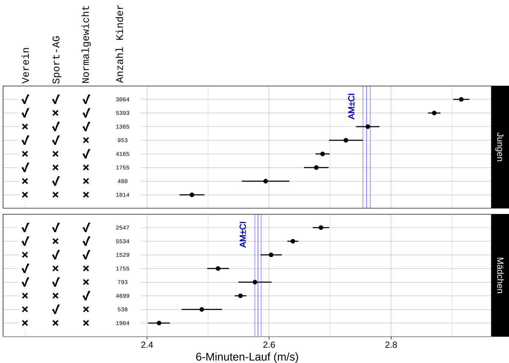
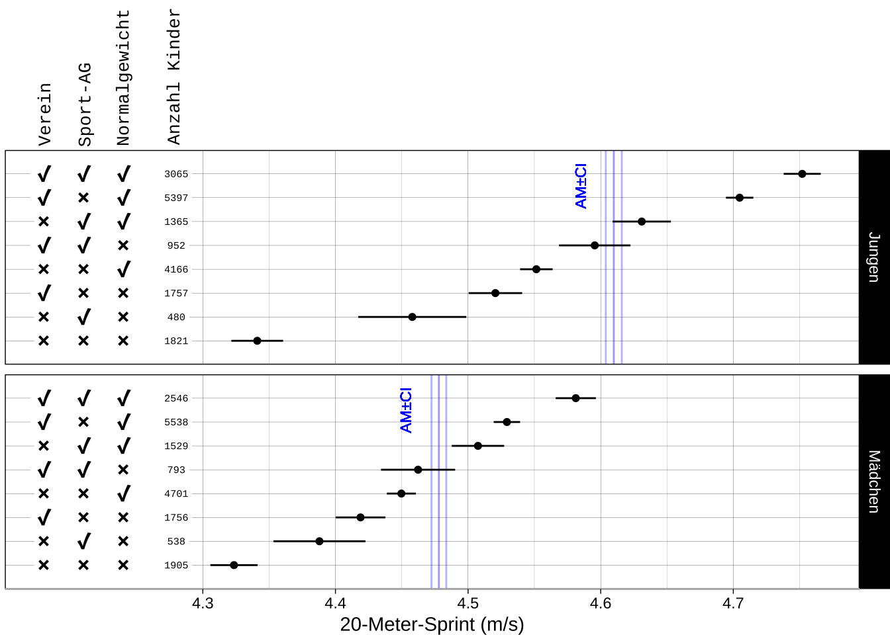
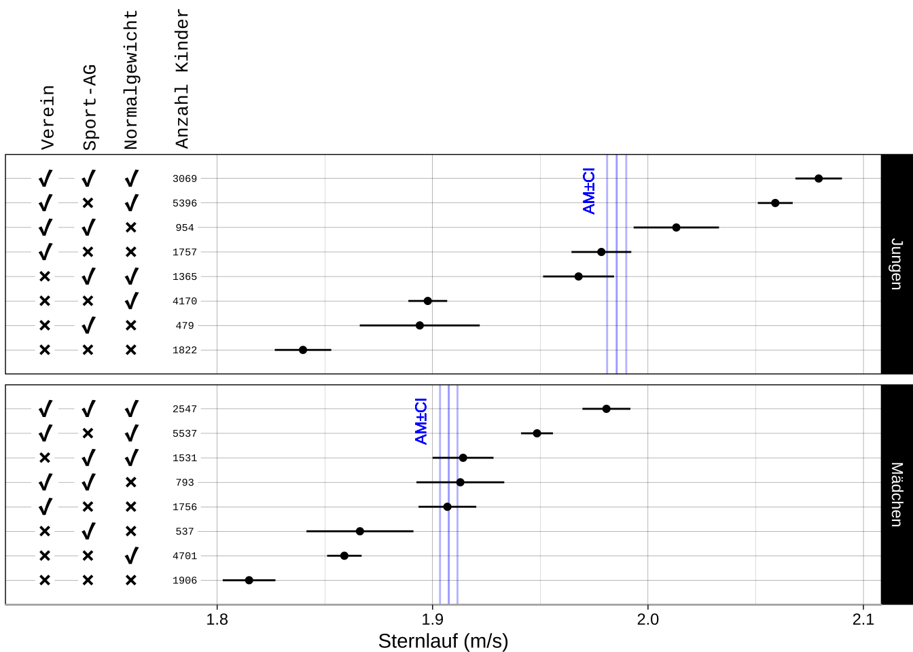

Mittlere Motorik-Testergebnisse in Abhängigkeit von Vereinsmitgliedschaft, außerunterrichtlichem Schulsport (Sport-AG), Normalgewicht und Geschlecht
Zusammenfassung
Abbildungen zur genannten Überschrift, Punkte arithmetische Mittelwerte, Fehlerbalken 95% Konfidenzniveau
6-Minuten-Lauf
20-Meter-Sprint

Sternlauf

Standweitsprung
Notizen
- Streuung Jungen > Streuung Mädchen?
- Vereins- und/oder Nicht-Normalgewichtseffekte Jungen > Mädchen
- Nicht-Normalgewichtskinder, die auch nicht im Verein sind rennen pro Sekunde ca. einen halben Meter weniger als Normalgewichtskinder im 6-Minuten-Lauf, die im Verein sind. Dies ist ca. doppelt so groß wie der Unterschied zwischen allen Mädchen und Jungen
Datengrundlage
- BeKiGeKi Schuljahre von 2017/2018 bis 2023/2024
- Klassifikation Normalgewicht (Perzentil P10-P90) auf Grundlage der Veröffentlichung: Kromeyer-Hauschild, K., Wabitsch, M., Kunze, D., Geller, F., Geiß, H. C., Hesse, V., von Hippel, A., Jaeger, U., Johnsen, D., Korte, W., Menner, K., Müller, G., Müller, J. M., Niemann-Pilatus, A., Remer, T., Schaefer, F., Wittchen, H.-U., Zabransky, S., Zellner, K., … Hebebrand, J. (2001). Perzentile für den Body-mass-Index für das Kindes- und Jugendalter unter Heranziehung verschiedener deutscher Stichproben. Monatsschrift Kinderheilkunde, 149(8), 807–818.
Aktualisierungen
- 2024-06-26: Veröffentlichung
Wiederverwendung
Zitat
Bitte zitieren Sie diese Arbeit als:
Wöhrl, T., & Bähr, F. (2024, June 26). Mittlere
Motorik-Testergebnisse in Abhängigkeit von Vereinsmitgliedschaft,
außerunterrichtlichem Schulsport (Sport-AG), Normalgewicht und
Geschlecht. https://bekigeki.github.io/016.html